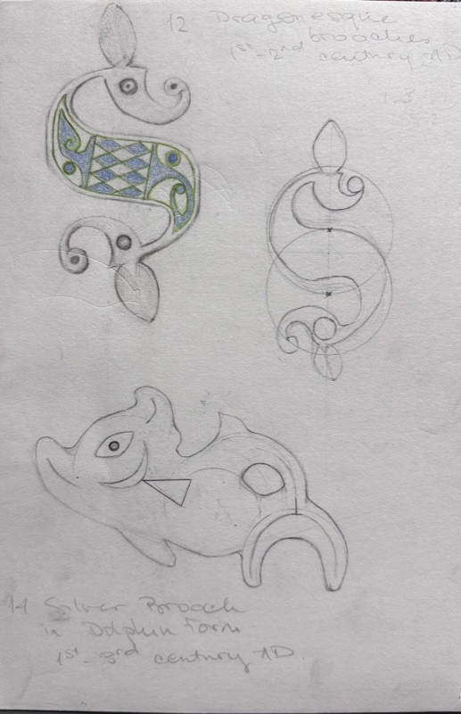
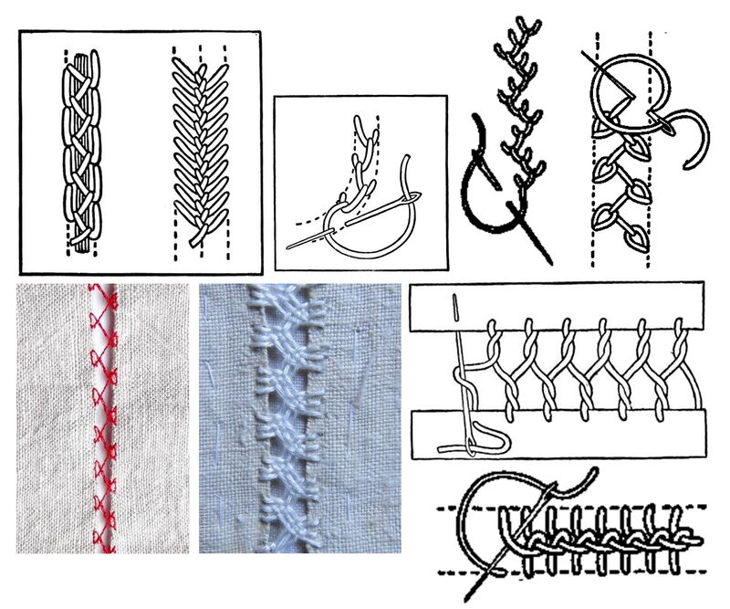
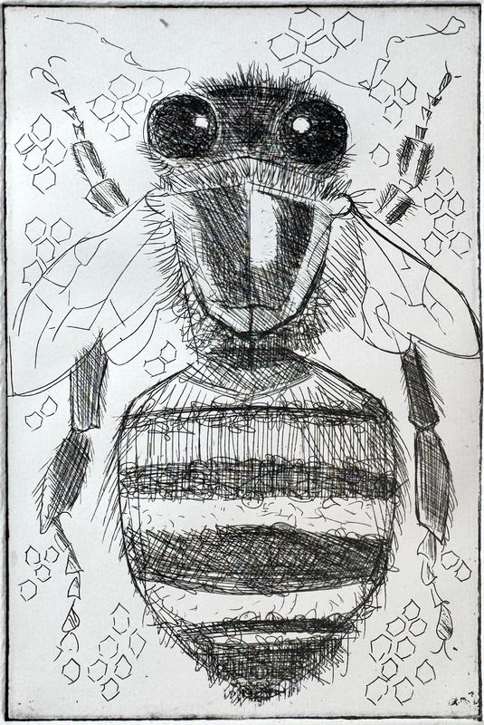

Saša Milić Art & Design
7 projects
i.Unit 1, Week 1

ii.Unit 1, Project 2
iii.Unit 1, Week 3A

iv.Unit 1, Project 4
iv.Unit 1, Week 4B
v.Unit 1, Project 5

vi.Unit 1, Project 6
To come
Unit 2
Unit 3
Saša Milić